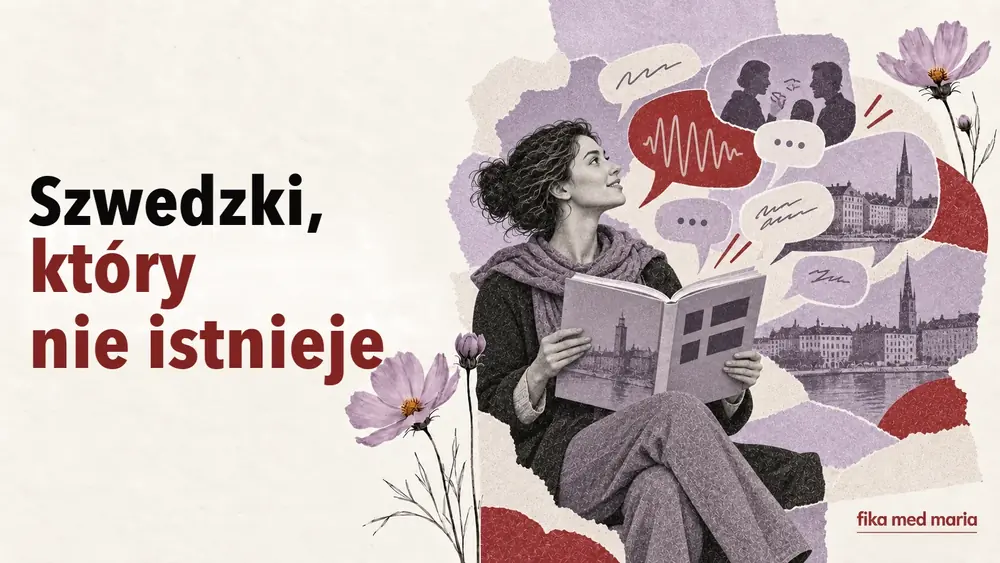
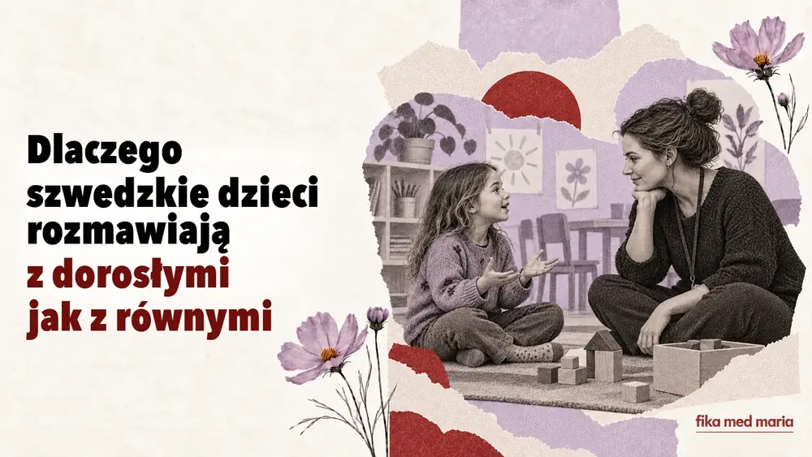
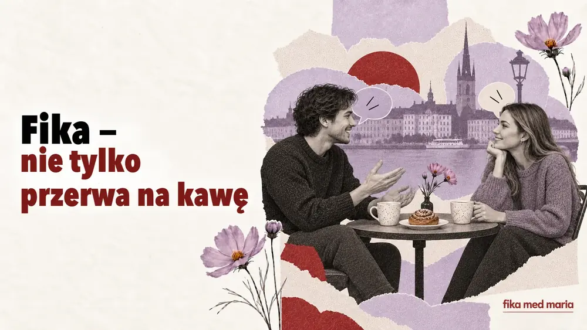

Czy można brzmieć po szwedzku, nie pozbywając się własnego akcentu?
Czy trzeba pozbyć się akcentu, żeby dobrze mówić po szwedzku? Przyglądamy się wymowie, rytmowi, zrozumiałości i realistycznym celom.
Żywy szwedzki, słowa i wyrażenia, kultura Szwecji, życie w Szwecji oraz porady, jak uczyć się języka regularnie.

Czy trzeba pozbyć się akcentu, żeby dobrze mówić po szwedzku? Przyglądamy się wymowie, rytmowi, zrozumiałości i realistycznym celom.

Dlaczego szwedzki brzmi inaczej w różnych regionach, co uznawać za standard i na jaką wymowę przygotować się podczas nauki.

Co znaczą prestigelös, förankra, avstämning, återkoppling i högt i tak – i co te słowa mówią o pracy w Szwecji.

Dlaczego osobista wolność w Szwecji idzie w parze z kolejkami, ustaleniami i zasadami – na przykładzie języka i codziennych sytuacji.

Dlaczego potoczny szwedzki tak bardzo różni się od dialogów z podręczników? Omawiamy formy skrócone, partykuły i zwroty, których naprawdę używają Szwedzi.

Jak rozpoznać krytykę, odmowę i irytację w języku szwedzkim, nawet jeśli rozmówca mówi spokojnie i uprzejmie.

Proste wyjaśnienie pięciu szwedzkich słów, które zmieniają ton zdania: ju, väl, nog, typ i liksom – na żywych przykładach.
Dlaczego Ukraińcy i Szwedzi inaczej okazują troskę, odmawiają i zadają osobiste pytania – z przykładami szwedzkich zwrotów.

Dlaczego szwedzkie dzieci zwracają się do dorosłych na du, wyrażają niezgodę i uczestniczą w podejmowaniu decyzji – wraz z przydatnymi zwrotami dla rodziców.

Fika to coś więcej niż kawa z bułeczką. Jak działa w domu i w pracy, o czym się rozmawia i jakie szwedzkie zwroty się przydadzą.

Jak słowa fredagsmys, lillördag, lördagsgodis i söndagsångest opisują codzienne życie i nastrój tygodnia w Szwecji.

Jak angielski, media społecznościowe, młodzieżowy slang i wielojęzyczna Szwecja zmieniają współczesny szwedzki – i czego uczeń powinien się z tego nauczyć.